6. September 2026
2. Tag: Bornholm-Umrundung mit dem Rad
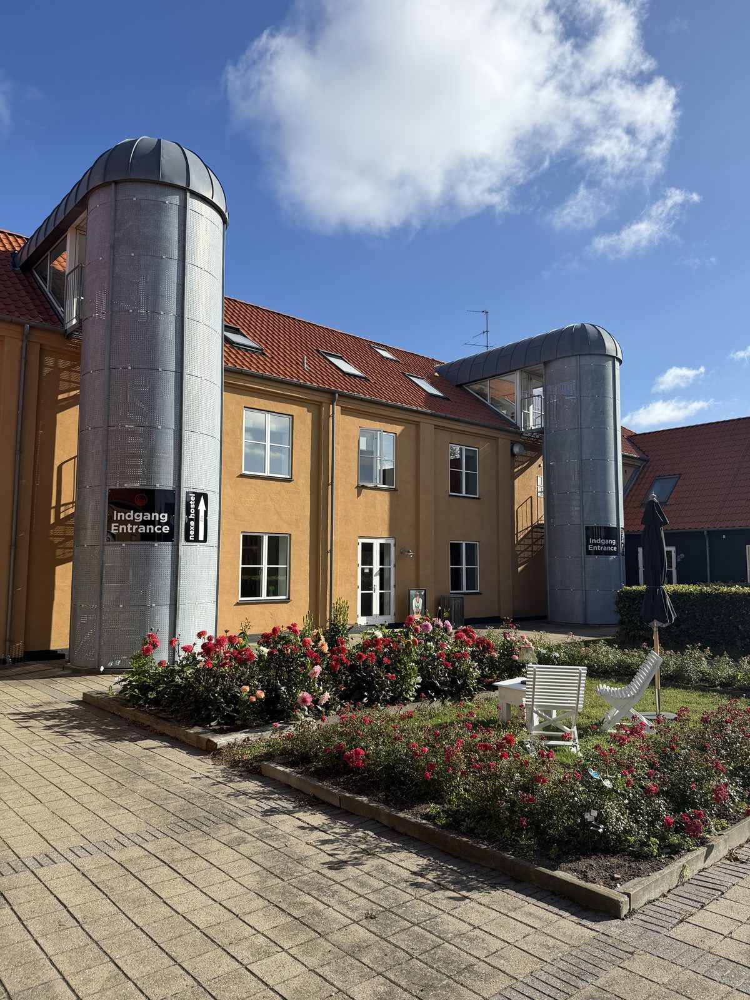
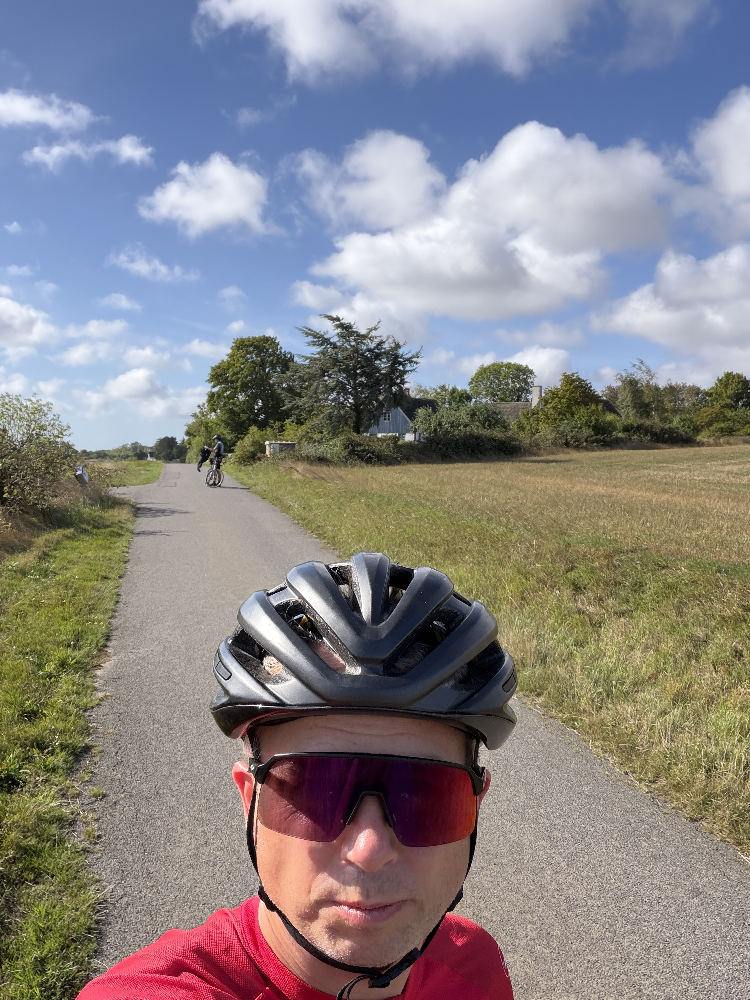
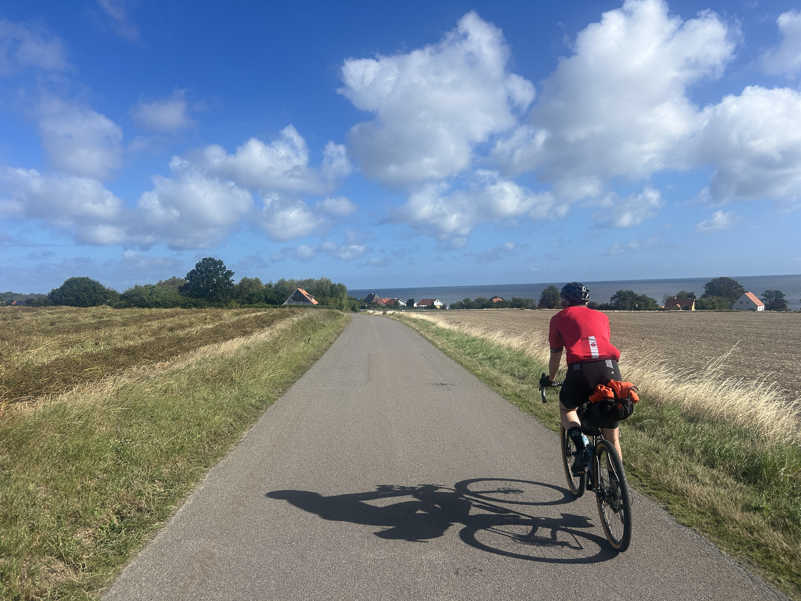
Das war der zweite Tag unserer Bornholm-Umrundung. Nicki und ich sind von Nexø aus weitergefahren, immer gegen den Uhrzeigersinn entlang der Küste – unser Etappenziel war Rønne. In Summe kamen an dem Tag knapp 80 Kilometer zusammen.
Zwei, drei Stunden hatten wir dabei ordentlichen Gegenwind mit 35 bis 40 km/h – die Bornholmer Flagge stand entsprechend steif im Wind. Dafür hatten wir großartiges Wetter, durchgehend sonnig, sodass man streckenweise auch im T-Shirt fahren konnte. Bornholm hat sich von seiner schönsten Seite gezeigt: eine traumhafte Insel mit tollem Hinterland, schönen Wäldern und Streckenabschnitten direkt am Meer entlang.
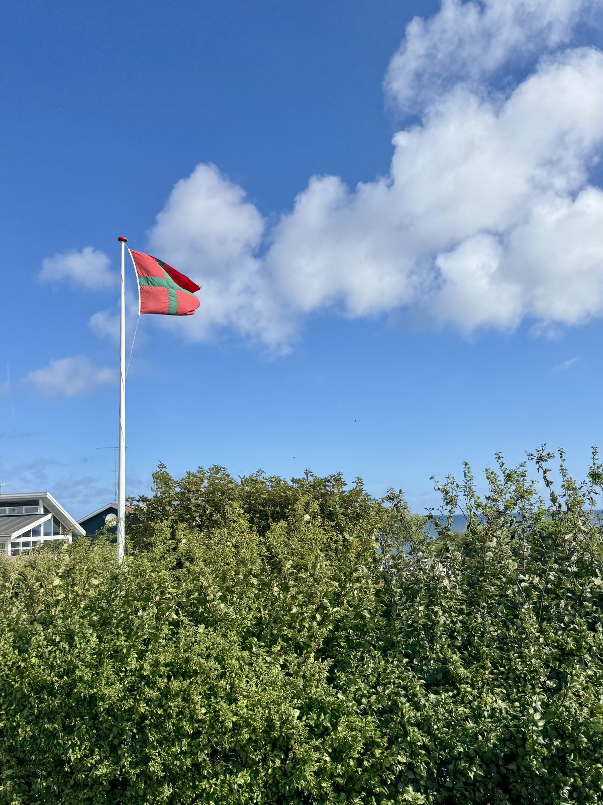
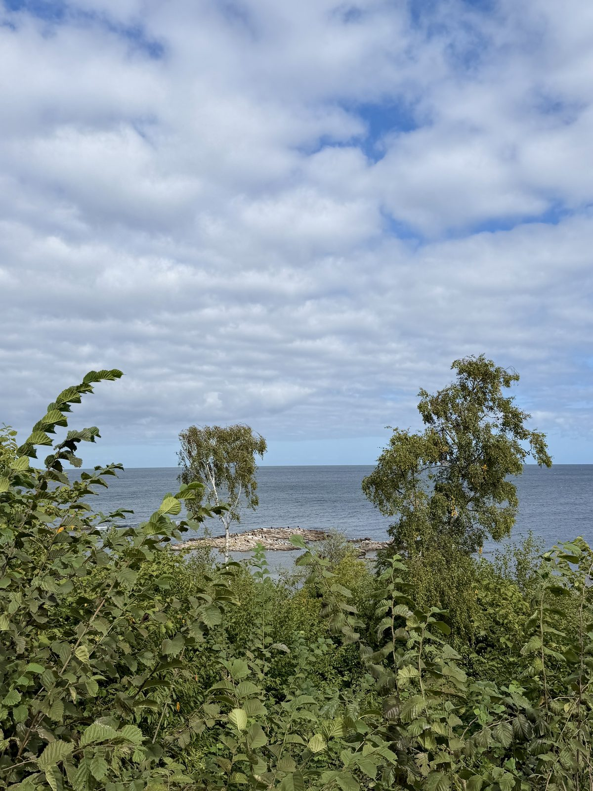
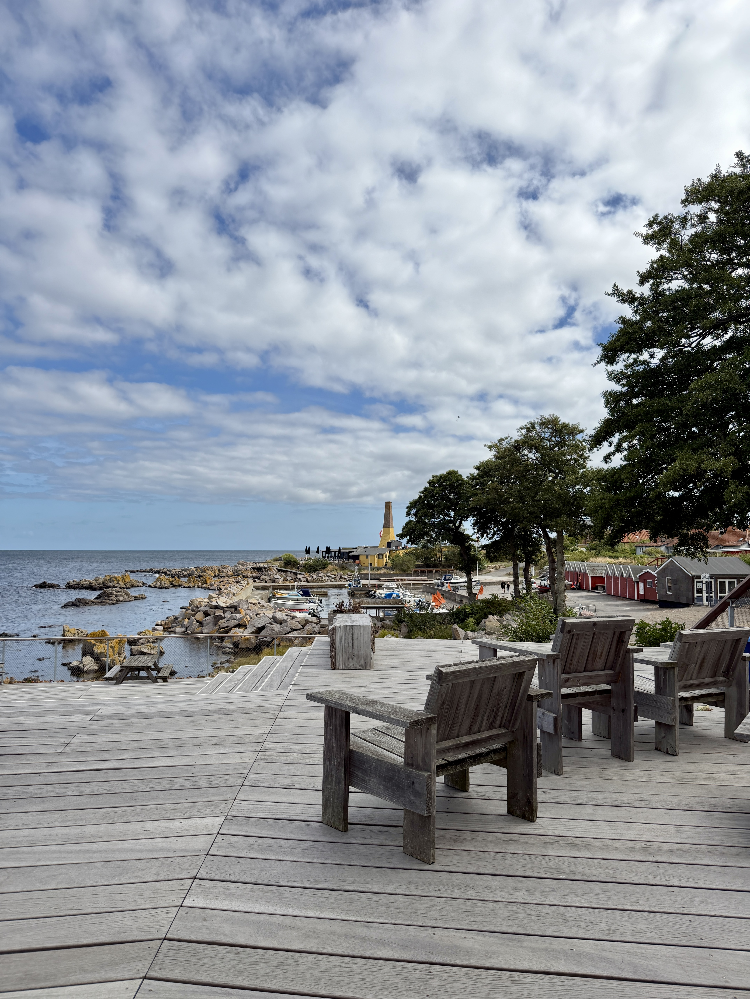
Höhepunkt des Tages war die Festungsruine Hammershus im Nordwesten der Insel – die größte mittelalterliche Burgruine Nordeuropas, hoch über der Steilküste gelegen. Ein wirklich schönes Erlebnis.
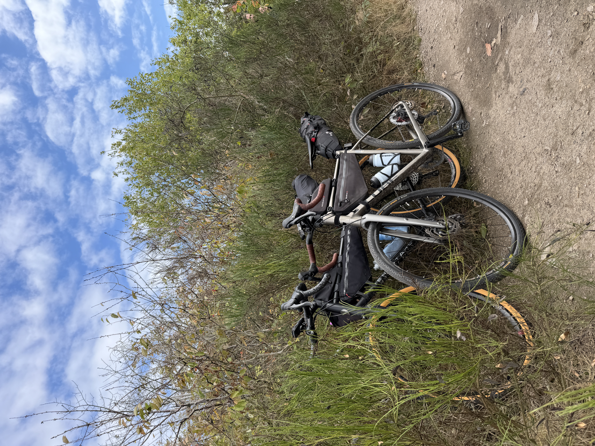
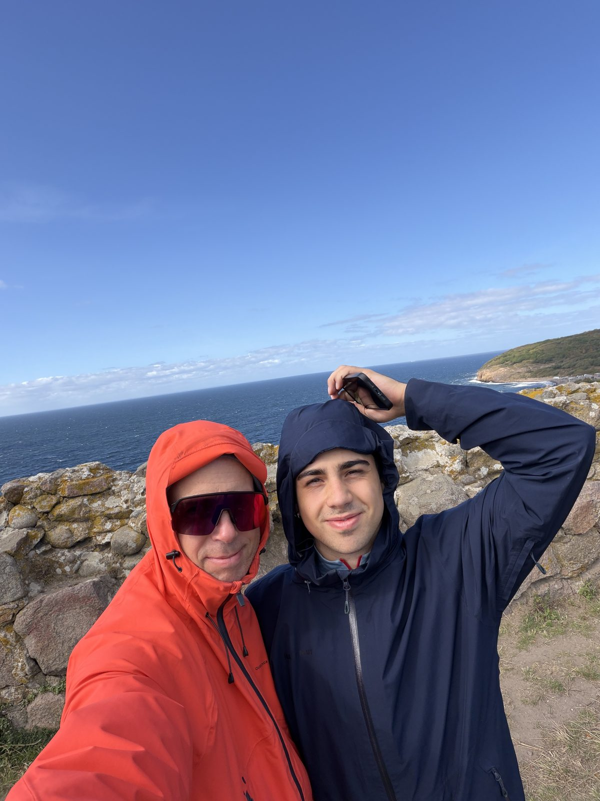
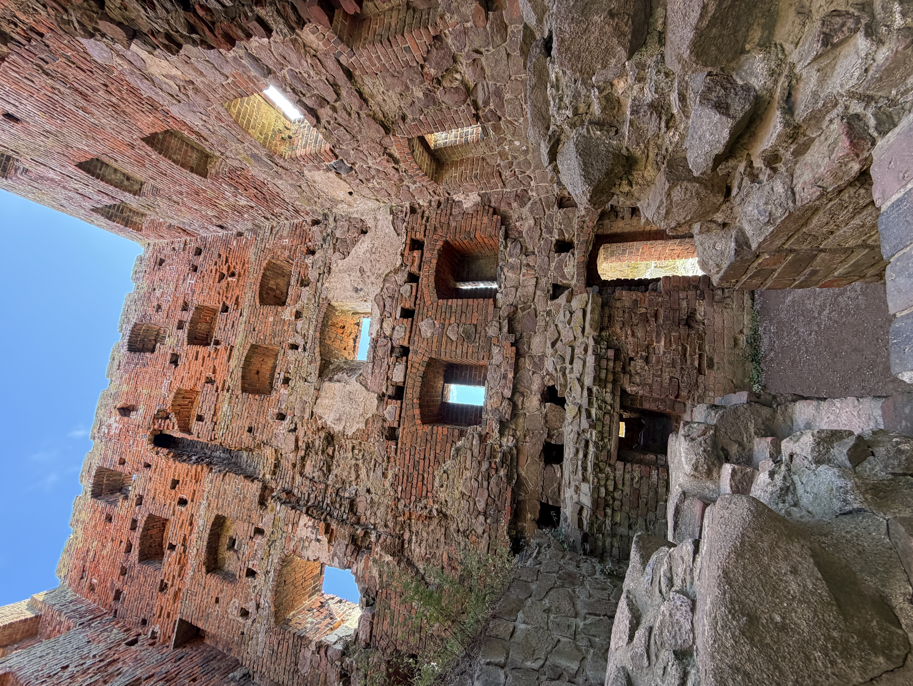
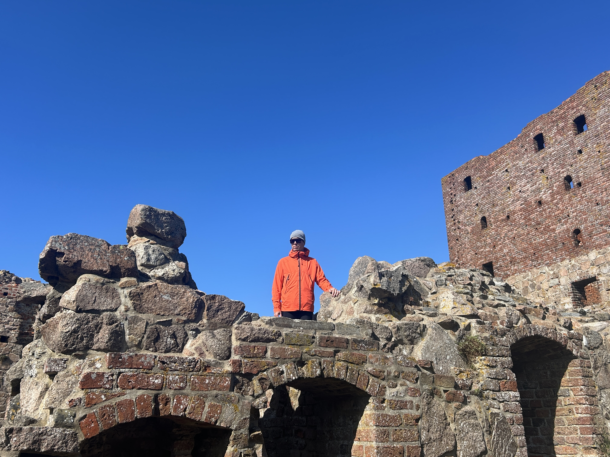
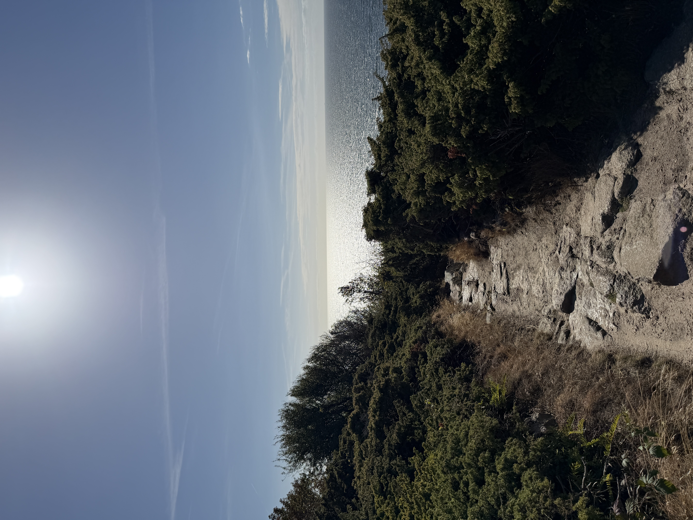
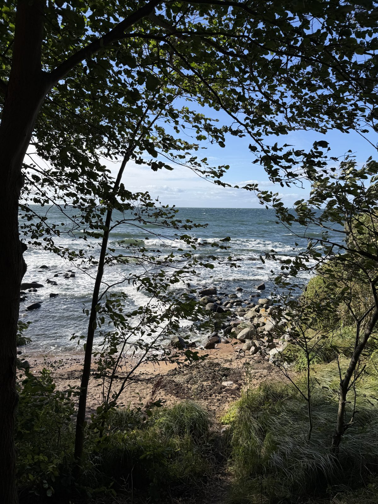